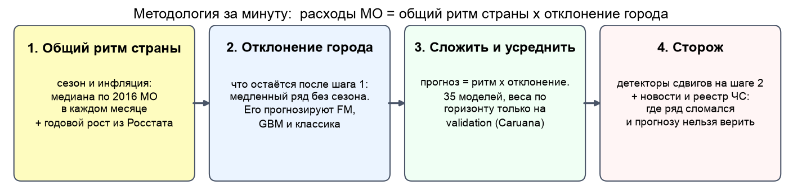
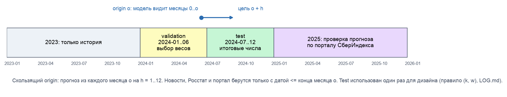
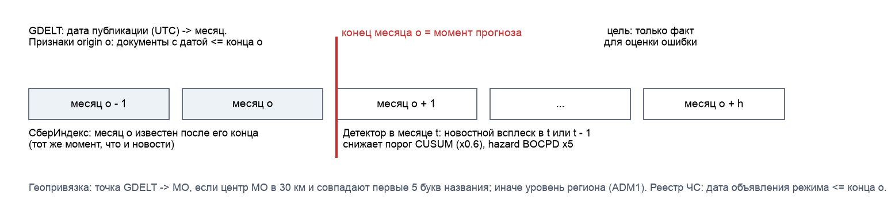
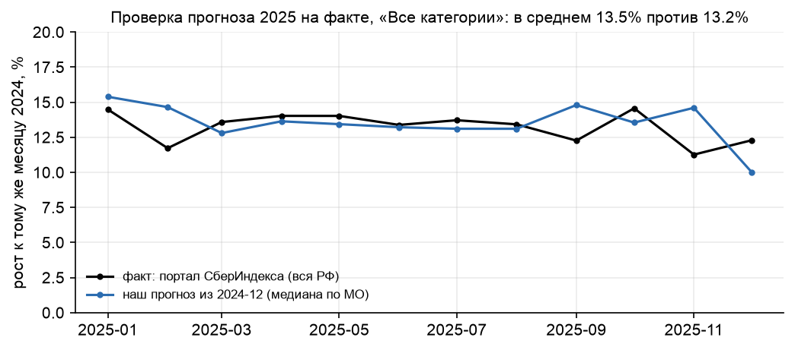

Конкурс СберИндекса 2026 · трек «Прогнозирование»
Прогноз безналичных расходов муниципалитетов
и поиск структурных сдвигов
Ритм страны × отклонение города · 8 фундаментальных моделей · ансамбль · 10 детекторов сдвигов · новости и реестр ЧС
−46%MAE к Prophet, h = 1
−24%MAE к Prophet, h = 3
−32%MAE к Prophet, h = 6
−52%MAE к Prophet, h = 12
Test 2024-07..12, 12 096 рядов; значимо на h = 1, 6, 12 (двусторонний бутстреп); на h = 3 ДИ включает 0.
1. Методология за минуту

- Проблема: 24 точки на ряд, перед прогнозом на год нет даже года истории
- Идея: сезон и инфляцию оцениваем по 2016 МО сразу; модели прогнозируют только отклонение города
- Итог: y = ритм страны × отклонение города; веса ансамбля только на validation
Честный протокол

- Скользящий origin: прогноз из месяца o видит только месяцы 0..o; Росстат с лагом 2 мес., новости и акты — до конца o
- Validation — выбор; test — оценка. Один взгляд на test в дизайне (правило (k, w)) записан в LOG.md; всё пост-hoc — отдельно
- Все модели, включая Prophet, на всех 12 096 рядах; тесты на утечку в
make smoke
2. Лучшая модель по горизонтам (test, MAE, руб.)
| h | Prophet | Ансамбль | Снижение | 95% ДИ разницы | Значимо | R² изм. | Ранг на test | «Все категории» |
|---|
| 1 | 563 | 306 | −46% | [−511; −37] | да | 0.42 | 10 из 36 | 837 / 1792 |
| 3 | 574 | 435 | −24% | [−302; +16] | нет | 0.59 | 2 из 36 | 1147 / 1772 |
| 6 | 652 | 446 | −32% | [−353; −66] | да | 0.53 | 1 из 36 | 1181 / 2057 |
| 12 | 1361 | 658 | −52% | [−1110; −430] | да | −0.17 | 1 из 36 | 1695 / 4060 |
95% ДИ разницы с Prophet — двусторонний бутстреп (МО × месяц цели). «Все категории»: ансамбль / Prophet.
| h | Лучшая одиночная, val | Ансамбль, val* | Ансамбль, test | Лучшая на test (после) |
|---|
| 1 | 400 (TimesFM 2.5 (декомп.)) | 301 | 306 | 296 (TimesFM 2.5 (декомп.)) |
| 3 | 569 (Theta) | 369 | 435 | 420 (LightGBM v1) |
| 6 | 540 (TimesFM 2.5 (декомп.)) | 484 | 446 | 493 (TimesFM 2.5 (декомп.)) |
| 12 | 993 (GBM база) | 800 | 658 | 691 (Декомпозиция) |
Правило: ансамбль, потому что на validation он лучше любой одиночной модели (* — на окне подбора весов). Лучшая на test одиночная модель известна только после.
Prophet не соломенное чучело
10 конфигураций Prophet на 400 МО, лучшая выбрана по test (в пользу Prophet)
Сетка считается.
3. Фундаментальные модели: где помогают и где нет

- ✔ на отклонении города: MAE в 1.5-3 раза ниже, лучше Prophet на всех h
- ✔ в ансамбле −6% MAE на h = 6; Chronos даёт откалиброванные интервалы
- ✔ мультивариантный Chronos-2 и дообучение: ещё −2%
- ✘ на сырых коротких рядах: хуже Prophet при h ≥ 3
- ✘ h = 12: экстраполируют тренд (729 против 691 у persistence)
- ✘ как признаки GBM: ±1%
4. Детекторы сдвигов: таблица решений
| Детектор | F1 сдвиг 10% | Задержка, мес. | Тревога на выбросе | Орск | Lift GDELT | Lift паводки |
|---|
| BOCPD-подтв. | 0.82 | 1.2 | 0.54 | нет | 0.6 | 0.0 |
| BOCPD | 0.78 | 0.3 | 0.90 | нет | 0.0 | 0.0 |
| PELT | 0.76 | 0.7 | 0.74 | нет | 0.4 | 0.0 |
| Window | 0.77 | 1.6 | 0.56 | нет | 0.9 | 1.8 |
| CUSUM | 0.40 | 1.4 | 0.21 | 2024-06 | 1.5 | 2.3 |
| CUSUM + новости | 0.43* | 1.1 | — | 2024-05 | 1.5 | 2.3 |
- Все пороги откалиброваны на одну частоту ложных тревог ≈2%; синтетика: сдвиги, тренды, выбросы в реальных рядах
- Мониторинг: BOCPD с подтверждением — лучший F1, выбросы вдвое реже BOCPD; быстрый сигнал — BOCPD
- Реальные события: стабильно выше базы только CUSUM (lift 1.5-2.3) → проверка гипотез по новостям и реестру
Реальный сдвиг: Орск и паводки 2023-2024

| Категория | Эффект 0..2 мес. | 95% ДИ | p (Холм) |
|---|
| Все категории | +0.7% | [−0.5; +1.7] | 1.00 |
| Здоровье | +0.2% | [−2.7; +2.9] | 1.00 |
| Маркетплейсы | +0.7% | [−2.6; +4.2] | 1.00 |
| Общественное питание | +7.1% | [−0.8; +15.3] | 0.55 |
| Продовольствие | +0.1% | [−0.9; +1.2] | 1.00 |
| Транспорт | −1.9% | [−4.3; +0.5] | 0.63 |
Event study: 42 МО из актов о ЧС против МО того же региона, плацебо-даты, перестановки, Холм. Среднего эффекта нет; Орск (+7%) — исключение. Акт о ЧС ≠ масштаб ущерба.
5. Новости: как согласуем с данными

- GDELT GKG: 1,55 млн документов; МО = 30 км + совпадение названия (942 места → 811 МО); иначе регион
- Реестр 71 события: постановления о ЧС (publication.pravo.gov.ru), Банк России; даты объявления и вступления
- Признаки GBM: ±1% MAE (честный ноль). Prior: CUSUM ловит Орск на месяц раньше; полусинтетика F1 0.43 против 0.38
6. Метрики
| Метрика | Ансамбль h=1/3/6/12 | Prophet h=1/3/6/12 | Смысл |
|---|
| MAE, руб. | 306 / 435 / 446 / 658 | 563 / 574 / 652 / 1361 | средняя ошибка (обязательная) |
| R² (уровни) | 0.998 / 0.996 / 0.995 / 0.991 | 0.991 / 0.992 / 0.990 / 0.954 | ≈ 1 у всех: уровни МО разные |
| R² на изменении | 0.42 / 0.59 / 0.53 / −0.17 | −2.6 / −0.9 / −8.4 / −167.2 | объясняет ли модель динамику |
| WAPE | 3.3% / 4.7% / 4.9% / 7.2% | 6.1% / 6.3% / 7.1% / 14.8% | % от суммы факта |
| Смещение | +0.7% / +1.2% / −0.4% / +0.3% | −0.6% / −0.5% / −1.6% / +6.8% | систематический сдвиг |
| Покрытие 80% | 0.81 / 0.74 / 0.67 / 0.76 | 0.87 / 0.90 / 0.87 / 0.93 | цель 0.80 |
| WIS, руб. | 211 / 302 / 333 / 516 | 485 / 448 / 503 / 1205 | интервал + медиана |
R² на уровнях не различает модели; R² на изменении показывает динамику. Интервалы: квантили ошибок validation, проверка на test.
7. Прогноз 2025 и проверка на факте


Прогноз конца 2024 г.: рост «Всех категорий» 0.135 (лог.) против факта портала СберИндекса 0.132. Единственная проверка на данных, которых не видел ни один этап.
Выводы и как запустить
- Главный выигрыш — архитектура: ритм страны по срезу МО + внешний рост для годового горизонта
- Ансамбль лучше Prophet на всех h; значимо на 3 из 4 — честно, с двусторонним бутстрепом
- FM — только после удаления общего сезона; на сырых коротких рядах они не работают
- Мониторинг сдвигов — BOCPD с подтверждением; гипотезы по новостям и ЧС — CUSUM с prior
- Режим ЧС сам по себе не сдвигает расходы на жителя; нужен масштаб ущерба
make setup data quick # свежий клон: тесты на утечку + все главные числа, ≈ 2 мин
make reproduce # полный прогон, 4-5 ч